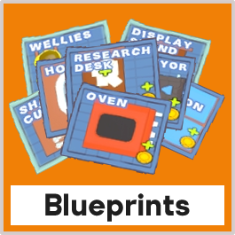

청사진을 통해 플레이어는 코인을 사용하여 레스토랑을 위한 새로운 가전제품, 재료 및 장식을 구입할 수 있다.
이러한 청사진은 게임에서 상점이라고 하는 각 준비 단계가 시작될 때 제공된다.
제공되는 청사진은 5개를 원칙으로 하지만, 상황에 따라 갯수가 달라질 수 있다.
청사진은 각 준비 단계가 시작될 때 봉투로 나타나며 P를 눌러 열 수 있다.
청사진 위를 걸어가면 해당 아이템에 대한 자세한 설명이 제공되며, 상호작용을 통해 구매할 수 있다.